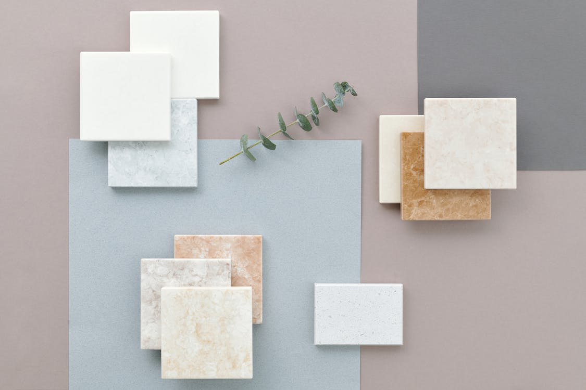
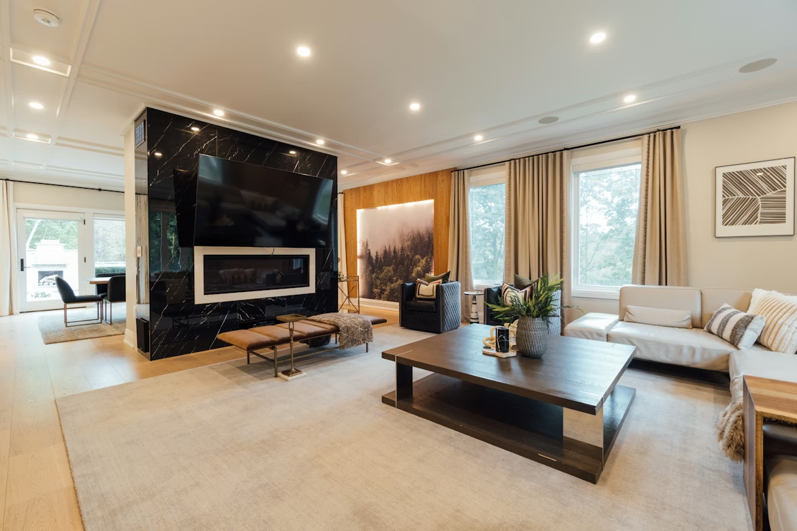
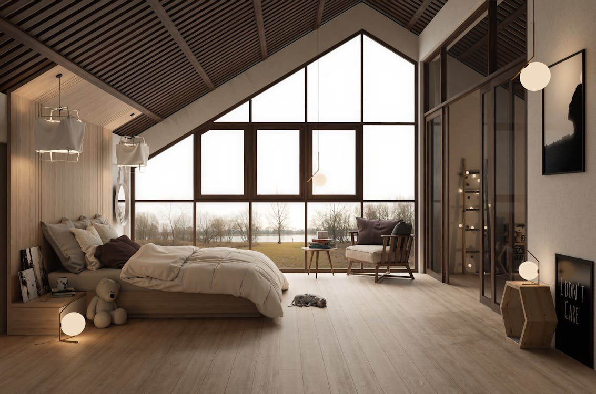
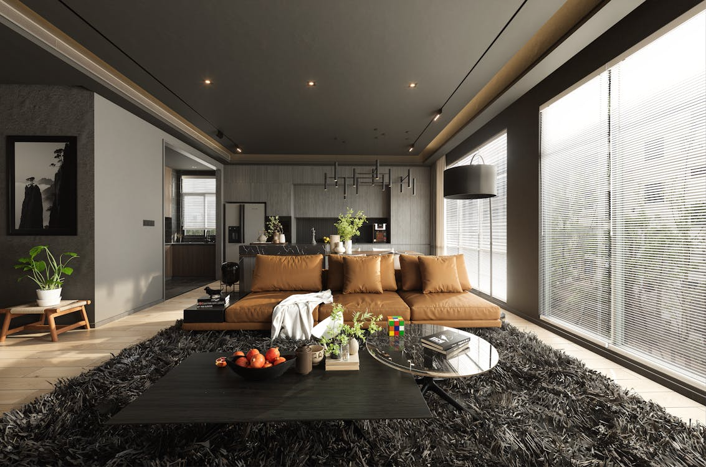

WHY INTERIOR DESIGN?
Style, comfort, and creativity combined
Interior design allows me to transform spaces into beautiful and functional environments. I enjoy choosing colors, furniture, and décor that bring harmony and balance into a room. Creating a space that feels both stylish and comfortable is something that truly excites me.
Designing spaces also gives me the opportunity to express my creativity and attention to detail. I love how a simple change can completely transform a room and make it feel warm and inviting. For me, interior design is not just about decoration, but about creating a place that feels like home.
STYLES
My Favourite Styles

✨Modern Style
Clean lines, simple colors, and minimal décor. One of the most apparent features of modern interior design is simple geometric shapes. In the modern interior, simple lines are visible, and intertwined twists and curves are not mentioned.
What you'll love about it
This style is simple, uncluttered and straightfoward. The Modern style is not an exeption, the modern design characteristics are so fantastic that you would fall in love with. If you love a sense of order and predictability, this is for you.

🌿 Scandinavian (Scandi)
Often called "Scandi," this style is the warmer, softer cousin of Modernism. It was born out of the long, dark Nordic winters, so its primary goal is to maximize natural light and create a feeling of Hygge (coziness).
What you'll love about it
If you want your home to be a tranquil sanctuary from the stress of the outside world, Scandi is the winner. It feels bright, airy, and "gentle." It’s ideal for creating a space that feels lived-in and welcoming rather than just "staged."

🏡 Neo-Industrial
Traditional Industrial style can sometimes feel cold or like living in a garage. Neo-Industrial (or "Modern Industrial") fixes this by taking those raw, architectural elements and "softening" them with luxury and comfort.
What you'll love about it
If you have an edgy, urban personality but still want a "touch of glam," this is it. It’s a bold look that feels authentic and "cool." You’ll enjoy the contrast between the "grit" of the architecture and the "softness" of the furniture.